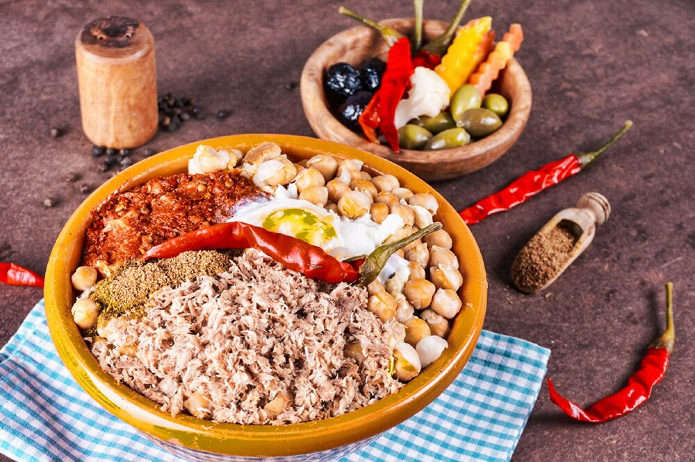

lablabi

Ingredients
-
Chickpeas
-
Extra virgin olive oil
-
Eggs
-
Spices
-
Harissa paste
-
Lemons
-
Finishing touches
Steps
-
Prepare the chickpeas: Add your canned chickpeas with their liquids to a saucepan. Cover them with water, making sure they’re submerged by roughly an inch. Bring the liquid to a boil. Then, lower the heat to medium-low. Cover the pot partially with the lid and let the beans simmer until they’re super tender. This should take about 30 minutes.
-
Toast the bread: While the chickpeas cook, tear your bread into pieces that would take about two to three bites to eat. Feel free to give it a taste test to make sure you’re measuring correctly! Arrange the pieces on a baking sheet and give them a good drizzle of olive oil. Toss to coat them well. Next, make sure the pieces are facing crust side down. When ready, place the baking sheet in the oven about 6 inches from the broiler just until the bread is golden brown. Be sure to keep a close eye on them, because they can burn fast!
-
Sauté the aromatics: Add more olive oil to a medium-sized non-stick skillet over medium heat. Once the oil begins to shimmer but isn’t so hot it’s sizzling, and add your onions, garlic, and spices. Cook the ingredients, stirring frequently until the onions are translucent and the mixture is fragrant
-
Season the chickpea stew: Transfer the onion mixture to the pot of chickpeas, and add the remaining ingredients. Give them all a good stir, and adjust the seasonings to suit your preferences
-
Portion, garnish, and serve: Now comes the fun part! Grab your serving bowls, and add some of the toasted bread to the bottom of each. Ladle the chickpea stew on top followed by extra flavor enhancers like more harissa, green onions or a poached egg. Sprinkle your favorite garnishes on top, and dig in while it’s warm!